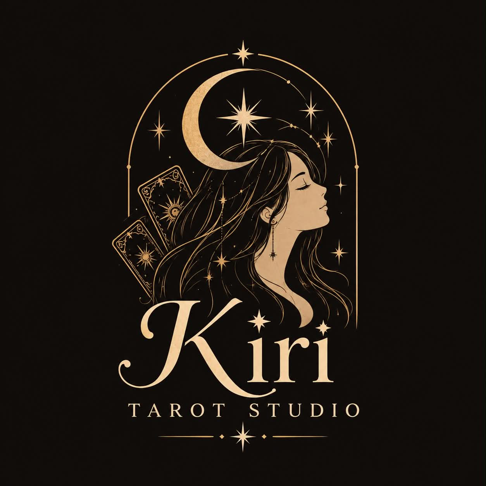
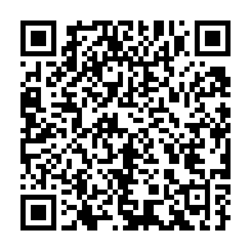

General Reading
A little space for your questions.
20,000 MMK
3 questions
Book this reading ↗A MOMENT FOR YOU · KIRI TAROT STUDIO
Bring your questions, your hopes, and whatever is on your mind. Explore a personal tarot reading with Wint Wah Thwal.
Phone call or written response · Your choice

YOUR QUESTIONS. YOUR SPACE. YOUR JOURNEY.THE READINGS
Choose a reading that feels right for you.
Every session starts with your questions.
A little space for your questions.
3 questions
Book this reading ↗Explore the connections on your mind.
Unlimited questions · 1 hour
Book this reading ↗Reflect on your personal wellbeing.
Unlimited questions · 1 hour
Book this reading ↗Reflect on your relationship with money.
Unlimited questions · 1 hour
Book this reading ↗Tarot is for personal reflection. Health and financial readings do not provide medical diagnoses, treatment or professional financial advice.
THE PERSON BEHIND THE CARDS
You may know this page as Tarot by Wint Wah Thwal. Welcome to its new chapter: Kiri Tarot Studio.
This is a space to bring the questions that matter to you, from relationships to everyday life. Choose a phone call or a written response when you book.
Let’s make time for your questions ↗KIND WORDS
Personal messages shared by clients.
Names are kept private.
100% believe. 100% good review.
Anonymous client · English excerpt / translation
It is accurate. Those things have been weighing on my mind. Wishing you success as a tarot reader.
Anonymous client · English excerpt / translation
So accurate—it gave me goosebumps.
Anonymous client · English excerpt / translation
Things happened as you said. Thank you for the advice.
Anonymous client · English excerpt / translation
Both points were so accurate.
Anonymous client · English excerpt / translation
It was accurate from the very start.
Anonymous client · English excerpt / translation
This one is accurate too.
Anonymous client · English excerpt / translation
It is really accurate.
Anonymous client · English excerpt / translation
Thank you. The details were accurate, and I really appreciate your careful explanation.
Anonymous client · English excerpt / translation
English excerpts are translated or shortened from the supplied Burmese messages. Open each original to read it in context. These are individual experiences.
YOUR NEXT CHAPTER
Choose your package and preferred reading format in the booking form. We’ll contact you by email or Facebook Messenger to confirm the details and arrange your session.
Open booking form ↗Submitting the form is a booking request. Your session is confirmed after we contact you.

SCAN TO REQUEST A READING
On your phone? Use the button instead.A FEW THINGS TO KNOW
You can choose a phone call or a written response in the booking form.
After you submit the form, we’ll contact you using the email or Facebook profile link you provide to confirm the details.
General Reading includes three questions. The relationship, health and financial packages each offer unlimited questions on the chosen topic within a one-hour session.